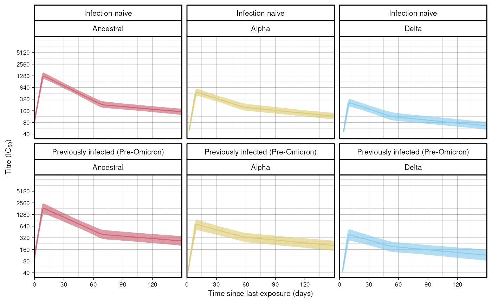
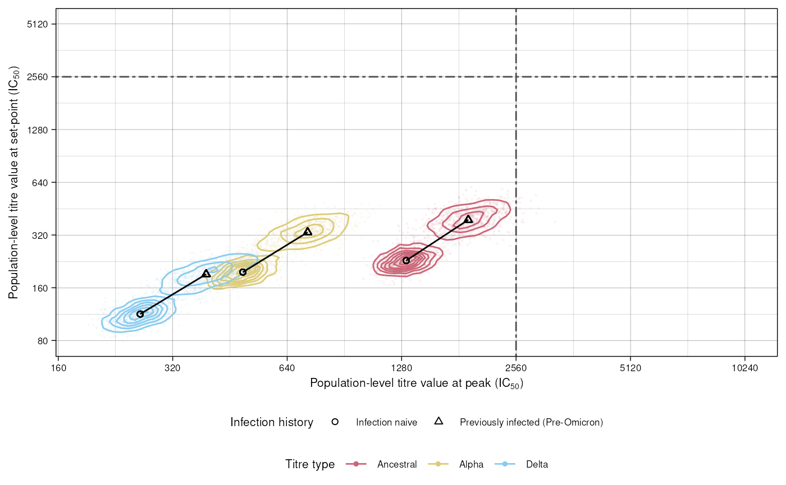
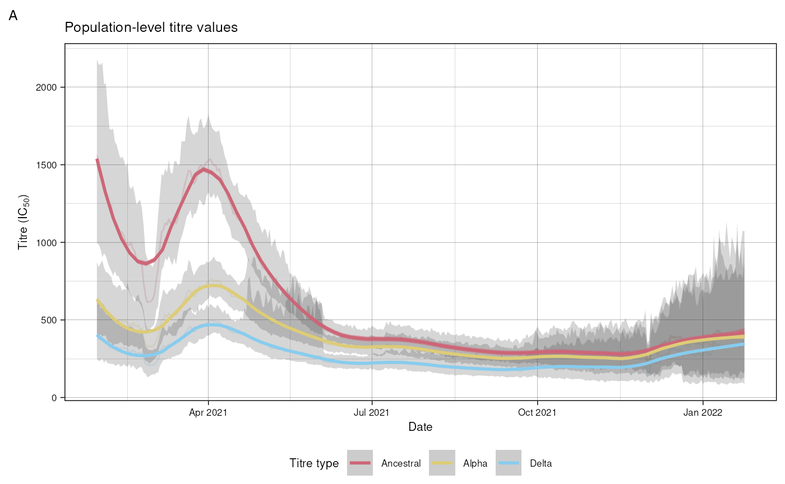
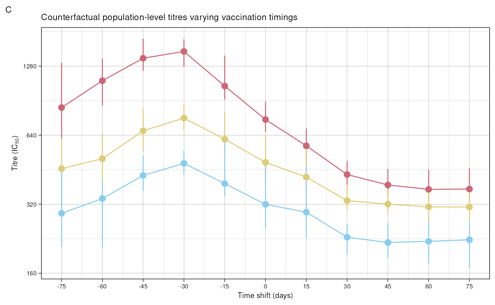

scova.RmdTo initialise a model object, the only required argument is a path to the data in CSV format, or a data.table. See scova for all available arguments. In this Vignette we use a dataset representing the Delta wave which is installed with this package, specifying a hierarchical model that just looks at the effect of infection history.
The fit method then has the same function signature as
the underlying cmdstanr::sample
method. Here we specify a relatively small number of iterations of the
algorithm to limit the time it takes to compile this Vignette.
dat <- data.table::fread(system.file("delta_full.rds", package = "epikinetics"))
mod <- epikinetics::scova$new(data = dat, covariate_formula = ~0 + infection_history)
delta <- mod$fit(parallel_chains = 4,
iter_warmup = 50,
iter_sampling = 200,
threads_per_chain = 4)
#> Running MCMC with 4 parallel chains...
#>
#> Chain 1 WARNING: There aren't enough warmup iterations to fit the
#> Chain 1 three stages of adaptation as currently configured.
#> Chain 1 Reducing each adaptation stage to 15%/75%/10% of
#> Chain 1 the given number of warmup iterations:
#> Chain 1 init_buffer = 7
#> Chain 1 adapt_window = 38
#> Chain 1 term_buffer = 5
#> Chain 1 Iteration: 1 / 250 [ 0%] (Warmup)
#> Chain 2 WARNING: There aren't enough warmup iterations to fit the
#> Chain 2 three stages of adaptation as currently configured.
#> Chain 2 Reducing each adaptation stage to 15%/75%/10% of
#> Chain 2 the given number of warmup iterations:
#> Chain 2 init_buffer = 7
#> Chain 2 adapt_window = 38
#> Chain 2 term_buffer = 5
#> Chain 2 Iteration: 1 / 250 [ 0%] (Warmup)
#> Chain 3 WARNING: There aren't enough warmup iterations to fit the
#> Chain 3 three stages of adaptation as currently configured.
#> Chain 3 Reducing each adaptation stage to 15%/75%/10% of
#> Chain 3 the given number of warmup iterations:
#> Chain 3 init_buffer = 7
#> Chain 3 adapt_window = 38
#> Chain 3 term_buffer = 5
#> Chain 3 Iteration: 1 / 250 [ 0%] (Warmup)
#> Chain 4 WARNING: There aren't enough warmup iterations to fit the
#> Chain 4 three stages of adaptation as currently configured.
#> Chain 4 Reducing each adaptation stage to 15%/75%/10% of
#> Chain 4 the given number of warmup iterations:
#> Chain 4 init_buffer = 7
#> Chain 4 adapt_window = 38
#> Chain 4 term_buffer = 5
#> Chain 4 Iteration: 1 / 250 [ 0%] (Warmup)
#> Chain 1 Iteration: 51 / 250 [ 20%] (Sampling)
#> Chain 3 Iteration: 51 / 250 [ 20%] (Sampling)
#> Chain 2 Iteration: 51 / 250 [ 20%] (Sampling)
#> Chain 4 Iteration: 51 / 250 [ 20%] (Sampling)
#> Chain 1 Iteration: 150 / 250 [ 60%] (Sampling)
#> Chain 3 Iteration: 150 / 250 [ 60%] (Sampling)
#> Chain 2 Iteration: 150 / 250 [ 60%] (Sampling)
#> Chain 4 Iteration: 150 / 250 [ 60%] (Sampling)
#> Chain 1 Iteration: 250 / 250 [100%] (Sampling)
#> Chain 3 Iteration: 250 / 250 [100%] (Sampling)
#> Chain 2 Iteration: 250 / 250 [100%] (Sampling)
#> Chain 1 finished in 251.5 seconds.
#> Chain 3 finished in 251.6 seconds.
#> Chain 2 finished in 251.8 seconds.
#> Chain 4 Iteration: 250 / 250 [100%] (Sampling)
#> Chain 4 finished in 254.2 seconds.
#>
#> All 4 chains finished successfully.
#> Mean chain execution time: 252.3 seconds.
#> Total execution time: 254.4 seconds.Figure 2 from the paper shows population level fits for each wave, disaggregated by infection history and titre type. Here we reproduce the facets for the Delta wave. Once the model has been fitted, simulate population trajectories using the fitted population parameters.
res <- mod$simulate_population_trajectories()
head(res)
#> t p k me lo hi infection_history titre_type
#> <int> <int> <int> <num> <num> <num> <char> <char>
#> 1: 0 1 1 85.03283 61.79873 113.4266 Infection naive Ancestral
#> 2: 1 1 1 117.52245 87.99594 151.6198 Infection naive Ancestral
#> 3: 2 1 1 161.60170 124.69805 203.8376 Infection naive Ancestral
#> 4: 3 1 1 221.98993 173.94588 277.0610 Infection naive Ancestral
#> 5: 4 1 1 302.97036 238.14148 381.2043 Infection naive Ancestral
#> 6: 5 1 1 417.55537 325.74862 544.8846 Infection naive AncestralSee data for the definition of the returned columns.
Using ggplot2:
library(ggplot2)
custom_theme <- theme_linedraw() + theme(
legend.position = "bottom",
text = element_text(size = 8, family = "Helvetica"),
strip.text.x.top = element_text(size = 8, family = "Helvetica"),
strip.text.x = element_text(size = 8, family = "Helvetica"),
strip.background = element_rect(fill = "white"),
strip.text = element_text(colour = 'black'),
strip.placement = "outside",
legend.box = "vertical",
legend.margin = margin(),
)
custom_palette <- c("#CC6677", "#DDCC77", "#88CCEE")
plot_data <- res
plot_data[, titre_type := forcats::fct_relevel(
titre_type,
c("Ancestral", "Alpha", "Delta"))]
ggplot(data = plot_data) +
geom_line(aes(x = t,
y = me,
colour = titre_type)) +
geom_ribbon(aes(x = t,
ymin = lo,
ymax = hi,
fill = titre_type), alpha = 0.65) +
scale_y_continuous(
trans = "log2",
breaks = c(40, 80, 160, 320, 640, 1280,
2560, 5120),
labels = c("40", "80", "160", "320", "640", "1280", "2560", "5120"),
limits = c(40, 10240)) +
scale_x_continuous(breaks = c(0, 30, 60, 90, 120),
labels = c("0", "30", "60", "90", "120"),
expand = c(0, 0)) +
coord_cartesian(clip = "off") +
labs(x = "Time since last exposure (days)",
y = expression(paste("Titre (IC"[50], ")"))) +
facet_wrap(infection_history ~ titre_type) +
scale_colour_manual(values = custom_palette) +
scale_fill_manual(values = custom_palette) +
guides(colour = "none", fill = "none") +
custom_theme
#> Warning: Removed 6 rows containing missing values or values outside the scale range
#> (`geom_line()`).
Figure 4 shows the relationship between infection history and titre values at peak and set points, for different titre types. We first simulate estimates for these from the fitted model:
res <- mod$population_stationary_points()
head(res)
#> k p .draw t0_pop tp_pop ts_pop m1_pop m2_pop
#> <int> <int> <int> <num> <num> <num> <num> <num>
#> 1: 1 1 1 4.410820 8.168995 69.35724 0.447930 -0.03998171
#> 2: 1 1 2 4.122570 8.220406 69.89225 0.463090 -0.03673517
#> 3: 1 1 3 3.992784 8.429232 69.34377 0.469506 -0.03856111
#> 4: 1 1 4 4.129627 8.695681 71.54112 0.440083 -0.03990376
#> 5: 1 1 5 3.985967 8.358872 64.51578 0.488066 -0.04816820
#> 6: 1 1 6 4.005071 8.560220 67.98897 0.504561 -0.04687770
#> m3_pop beta_t0 beta_tp beta_ts beta_m1 beta_m2 beta_m3
#> <num> <num> <num> <num> <num> <num> <num>
#> 1: -0.00738625 0.0892197 -0.193925 -0.209364 0.200908 -0.0399520 -0.00468916
#> 2: -0.00799955 -0.0617495 -0.158054 0.556248 0.217805 -0.0366927 -0.00573989
#> 3: -0.00853792 -0.4106060 0.393672 -0.335826 0.226357 -0.0385086 -0.00599007
#> 4: -0.00836698 -0.1504630 -0.168249 -0.374482 0.193636 -0.0392022 -0.00675386
#> 5: -0.00784776 -0.3478230 0.104802 0.918281 0.255142 -0.0207145 -0.00605556
#> 6: -0.00581304 -0.1382590 0.120330 -0.719028 0.267724 -0.0139650 -0.00431706
#> mu_0 mu_p mu_s infection_history titre_type rel_drop
#> <num> <num> <num> <char> <char> <num>
#> 1: 106.35528 1343.598 246.5053 Infection naive Ancestral 0.1834666
#> 2: 87.09383 1218.834 253.4858 Infection naive Ancestral 0.2079739
#> 3: 79.60086 1236.706 242.7546 Infection naive Ancestral 0.1962912
#> 4: 87.52087 1241.937 218.3664 Infection naive Ancestral 0.1758272
#> 5: 79.22562 1339.590 205.4437 Infection naive Ancestral 0.1533630
#> 6: 80.28169 1602.548 232.3682 Infection naive Ancestral 0.1449992
#> rel_drop_me mu_p_me mu_s_me
#> <num> <num> <num>
#> 1: 0.1734832 1315.809 228.7876
#> 2: 0.1734832 1315.809 228.7876
#> 3: 0.1734832 1315.809 228.7876
#> 4: 0.1734832 1315.809 228.7876
#> 5: 0.1734832 1315.809 228.7876
#> 6: 0.1734832 1315.809 228.7876The values we’re going to plot are the mean peak titre values
(mu_p_me) and mean set point titre values
(mu_s_me), for different titre types and infection
histories. See data for a full definition of all
the returned columns. Using ggplot2:
plot_data <- res[, titre_type := forcats::fct_relevel(
titre_type,
c("Ancestral", "Alpha", "Delta"))]
ggplot(data = plot_data, aes(
x = mu_p, y = mu_s,
colour = titre_type)) +
geom_density_2d(
aes(
group = interaction(
infection_history,
titre_type))) +
geom_point(data = plot_data[.draw <= 2000],
alpha = 0.05, size = 0.2) +
geom_point(aes(x = mu_p_me, y = mu_s_me,
shape = infection_history),
colour = "black") +
geom_path(aes(x = mu_p_me, y = mu_s_me,
group = titre_type),
colour = "black") +
geom_vline(xintercept = 2560, linetype = "twodash", colour = "gray30") +
scale_x_continuous(
trans = "log2",
breaks = c(40, 80, 160, 320, 640, 1280, 2560, 5120, 10240),
labels = c(expression(" " <= 40),
"80", "160", "320", "640", "1280", "2560", "5120", "10240"),
limits = c(NA, 10240)) +
geom_hline(yintercept = 2560, linetype = "twodash", colour = "gray30") +
scale_y_continuous(
trans = "log2",
breaks = c(40, 80, 160, 320, 640, 1280, 2560, 5120, 10240),
labels = c(expression(" " <= 40),
"80", "160", "320", "640", "1280", "2560", "5120", "10240"),
limits = c(NA, 5120)) +
custom_theme +
scale_shape_manual(values = c(1, 2, 3)) +
labs(x = expression(paste("Population-level titre value at peak (IC"[50], ")")),
y = expression(paste("Population-level titre value at set-point (IC"[50], ")"))) +
scale_colour_manual(values = custom_palette) +
guides(colour = guide_legend(title = "Titre type", override.aes = list(alpha = 1, size = 1)),
shape = guide_legend(title = "Infection history"))
Figure 5 uses simulations of individual trajectories to derive population level titre values. This can take a while so here we set the maximum number of draws to just 250 for speed.
res <- mod$simulate_individual_trajectories(n_draws = 250)
#> Registered S3 method overwritten by 'mosaic':
#> method from
#> fortify.SpatialPolygonsDataFrame ggplot2
head(res)
#> calendar_date titre_type me lo hi
#> <IDat> <char> <num> <num> <num>
#> 1: 2021-03-08 Ancestral 1122.561 899.7913 1474.929
#> 2: 2021-03-09 Ancestral 1114.609 882.1468 1450.662
#> 3: 2021-03-10 Ancestral 1150.423 911.1426 1530.973
#> 4: 2021-03-11 Ancestral 1121.402 878.6975 1447.972
#> 5: 2021-03-12 Ancestral 1115.039 851.9412 1443.723
#> 6: 2021-03-13 Ancestral 1150.059 900.9269 1520.740See data for a definition of all the returned columns. Figure 5 A plots the derived population trajectories. Here we replicate a portion of the graph from the paper, from the minimum date in the dataset until the date at which the next variant emerged.
date_delta <- lubridate::ymd("2021-05-07")
date_ba2 <- lubridate::ymd("2022-01-24")
res$wave <- "Delta"
dat$wave <- "Delta"
plot_data <- merge(
res, dat[, .(
min_date = min(date), max_date = max(date)), by = wave])[
, .SD[calendar_date >= min_date & calendar_date <= date_ba2], by = wave]
plot_data[, titre_type := forcats::fct_relevel(
titre_type,
c("Ancestral", "Alpha", "Delta"))]
ggplot() + geom_line(
data = plot_data,
aes(x = calendar_date,
y = me,
group = interaction(titre_type, wave),
colour = titre_type),
alpha = 0.2) +
geom_ribbon(
data = plot_data,
aes(x = calendar_date,
ymin = lo,
ymax = hi,
group = interaction(titre_type, wave)
),
alpha = 0.2) +
labs(title = "Population-level titre values",
tag = "A",
x = "Date",
y = expression(paste("Titre (IC"[50], ")"))) +
scale_colour_manual(
values = custom_palette) +
scale_fill_manual(
values = custom_palette) +
scale_x_date(
date_labels = "%b %Y",
limits = c(min(dat$date), date_ba2)) +
geom_smooth(
data = plot_data,
aes(x = calendar_date,
y = me,
fill = titre_type,
colour = titre_type,
group = interaction(titre_type, wave)),
alpha = 0.5, span = 0.2) +
custom_theme +
guides(colour = guide_legend(title = "Titre type"))
#> `geom_smooth()` using method = 'loess' and formula = 'y ~ x'
Figure 5 C shows counterfactual trajectories varying vaccination
timings. To do this, we simulate individual trajectories with different
time_shift arguments. Here we set the maximum number of
draws to just 50 for speed.
time_shift_values <- seq(-75, 75, by = 15)
indices <- seq_along(time_shift_values)
results_list <- lapply(indices, function(index) {
shift <- time_shift_values[index]
result <- mod$simulate_individual_trajectories(n_draws = 50, time_shift = shift)
result[, time_shift:= shift]
result
})
combined_data <- data.table::data.table(data.table::rbindlist(results_list))Plotting the median values:
plot_data <- combined_data[calendar_date == date_delta]
plot_data <- plot_data[, titre_type := forcats::fct_relevel(
titre_type,
c("Ancestral", "Alpha", "Delta"))]
ggplot(
data = plot_data) +
geom_line(aes(
x = time_shift, y = me, colour = titre_type)) +
geom_pointrange(aes(
x = time_shift, y = me, ymin = lo,
ymax = hi, colour = titre_type)) +
scale_x_continuous(
breaks = time_shift_values) +
scale_y_continuous(
trans = "log2",
breaks = c(40, 80, 160, 320, 640, 1280),
labels = c("40", "80", "160", "320", "640", "1280")) +
scale_colour_manual(
values = custom_palette) +
labs(title = "Population titre values varying vaccine timings",
x = "Time shift (days)",
y = expression(paste("Titre (IC"[50], ")"))) +
custom_theme +
theme(legend.position = "none") +
guides(colour = guide_legend(title = "Titre Type", nrow = 1, override.aes = list(alpha = 1, size = 1))) +
labs(tag = "C",
title = "Counterfactual population-level titres varying vaccination timings")